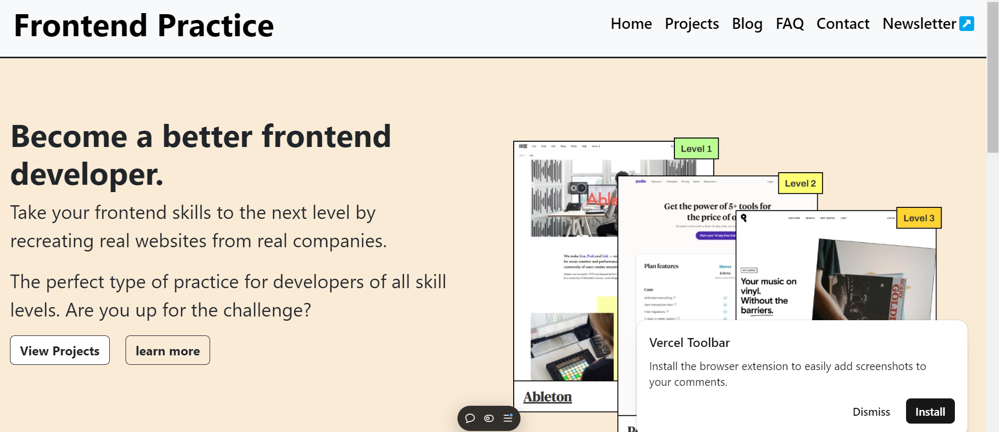

Lastest Projects

Forntend Practice
Frontend practice involves working with HTML, CSS, and JavaScript to build visually appealing and interactive websites.
Frontend practice involves working with HTML, CSS, and JavaScript to build visually appealing and interactive websites.